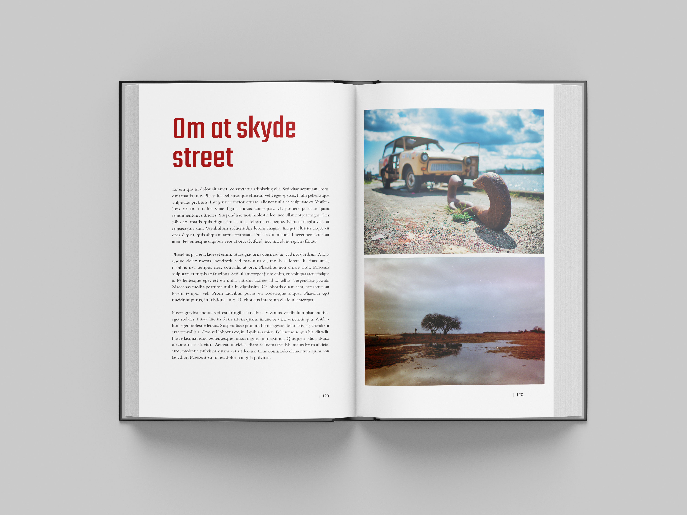
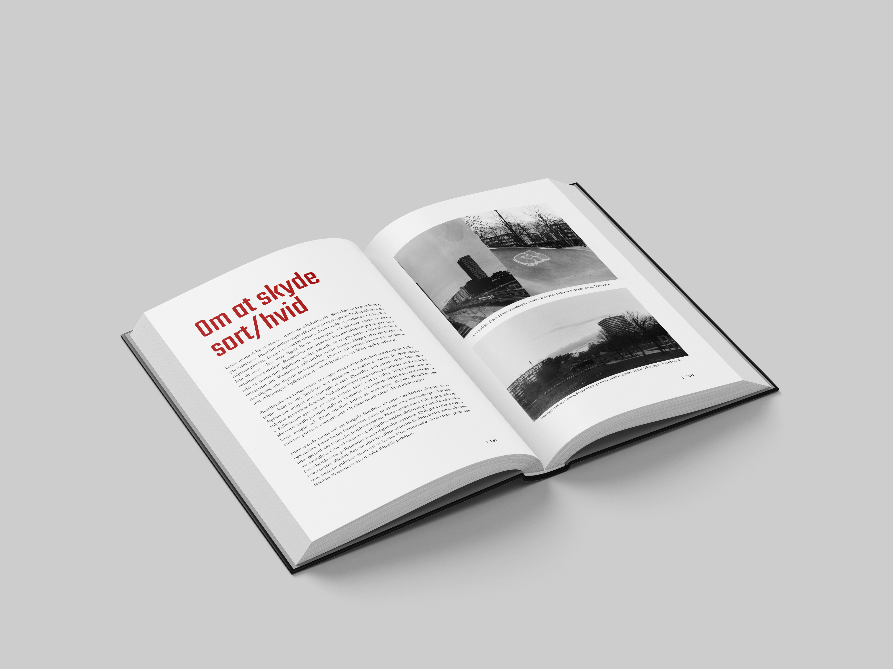

Københavnerbilleder - En guide til hipster foto
af Sten Simons
Kort om bogen
Københavnerbilleder er de danske streetfotografers bibel: Det er en fusion mellem et kunstværk og en lærebog. Bogen gennemgår alle væsentlige aspekter af streetfotografering fra grundlæggende teknik til kreative eksperimenter. Alt sammen krydret med masser af inspirerende fotos. God læselyst!
Stamdata om bogen
- Titel: Københavnerbilleder - en guide til hipster foto
- Forfatter: Sten Simons
- Antal sider: 344
- Forlag: Mellem Linjerne
- ISBN: 987-6-987654-32-1
- Pris: 399.-


Anmeldelser
5 af 6 stjerner
Københavnerbilleder er en grundig introduktion til at skyde billeder med retro-kant. Hvad enten du er har arbejdet med foto siden 135-filmen kom på markedet, du kun har skudt digitalt eller er helt nybegynder, er der masser af tips og tricks i bogen.
Hanne Hovgaard, Berlingeren
4 af 5 stjerner
Teksten er underholdende, og billederne er sku’ flotte. Hvad mere skal man sige om en fotobog?
Kim Kloggaard, Fotojournalen.dk
6 af 6 stjerner
Sten Simons kan det der - og han bliver bedre og bedre. Stens tredje fotobog er klart den bedste - her er han for alvor i sit rette element, meget bedre end “studiefotografering som begyndere.” Tillykke - godt arbejde.
Volmer Hansen, Lukkertiden.dk